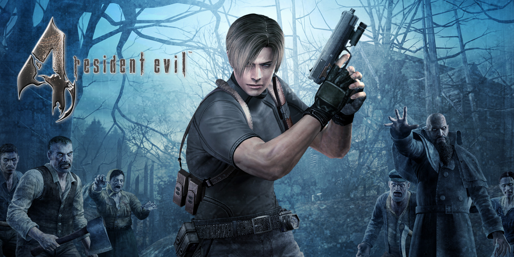

Ein actiongeladenes Horror-Survival-Spiel von Capcom
In Resident Evil 4 begibt sich der Spieler in die Rolle von Leon S. Kennedy, einem Agenten, der den Auftrag hat, die entführte Tochter des Präsidenten zu retten. Die Handlung führt ihn in ein abgelegenes Dorf in Europa, das von parasitären Kreaturen und einer finsteren Sekte heimgesucht wird. Leon muss sich durch Horden von Feinden kämpfen, um das Geheimnis hinter der Entführung und den mysteriösen Vorkommnissen in dem Dorf zu lüften.
